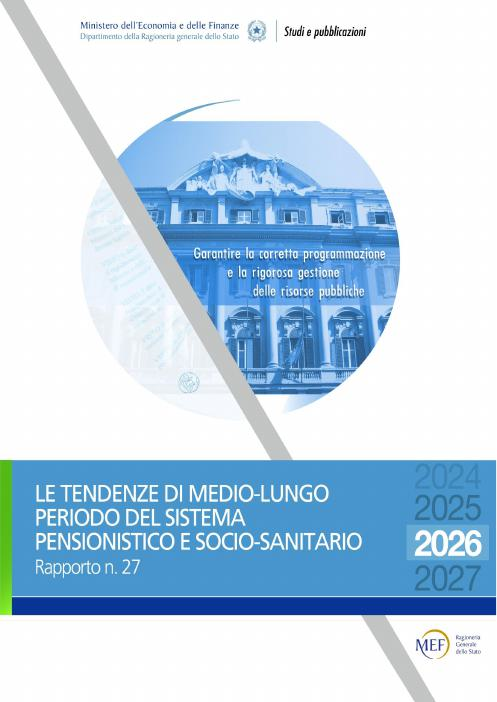
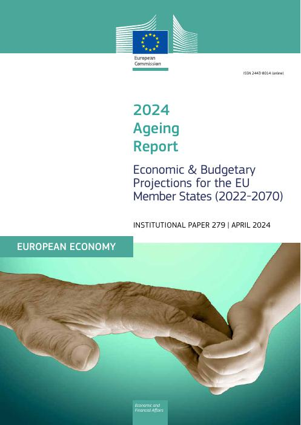

workers per pensioner 27.2 mln insured workers / 16.4 mln pensioners, 2025
Who pays? You do. And one day someone will pay for you.
Sources: RGS, Rapporto n. 27 (2026); INPS, XXV Rapporto Annuale (2026), Relazione del Presidente.
The hidden debt: pension promises already made
Accrued pension entitlements: what has already been promised to today's workers and pensioners.
438%
of GDP in Italy (2021)
137%
official public debt (2025)
Not debt in the legal sense, but it shows how much of the future is already committed.
Source: Eurostat, nasa_10_pens1 (Supplementary Table 29, all social insurance pension schemes); gov_10dd_edpt1.
What is a pension for?
It protects us from
Old age: living longer than our savings
Disability: no longer being able to work
Death of the family's earner
It serves to
Spread income over a whole life
Prevent poverty in old age
Redistribute between rich and poor, and between generations
On our own we save too little for old age: that is why the state makes it compulsory.
Two ways to pay for pensions
Pay-as-you-go
Today's workers pay the pensions of today's retirees. It yields as much as workers and wages grow.
Examples: Italy, Germany, Spain.
Funded
Everyone puts money aside in a fund that invests it.
It yields what financial markets yield. These are pension funds.
Examples: Australia, Netherlands, Denmark, Chile.
Earnings-related (retributivo)
Pension linked to wages, often those of the last years.
Examples: Spain, Italy before 1996.
Contribution-based (contributivo)
Pension linked to what you paid in and to life expectancy.
Examples: Italy since 1996, Sweden, Poland, Latvia.
In many countries the two systems coexist.
Sources: OECD, Pensions at a Glance 2019 and 2023, pension funds data 2021; Law 335/1995; literature on notional defined contribution systems; MDPI Sustainability 13(4), 2021 (Spain); Chilean Law 21.735 (2025).
01
A contract between generations
When does everyone gain?
The candy game (Samuelson, 1958)
Each young person gives 1 candy to the old. When old, they will receive the candies of the young who come next.
Return on the pension = (1+n)(1+g) − 1
1+n = children per woman / 2 (with 2 children n = 0: constant population) · g = productivity growth
When does pay-as-you-go pay off?
It pays off if n + g > r
n = population growth · g = productivity growth · r = interest rate
Aaron condition (1966). Chart: what €1 paid in each year for 40 years is worth at retirement, under the two systems.
Pensions and schools: two halves of the same pact
Parents pay for their children's schooling. Children, once adults, pay for their parents' pensions. Education raises productivity (g), and a higher g pays for pensions.
Schools and pensions grew up together
UK: Education Act 1944 → National Insurance Act 1946
Italy:scuola media unica 1962 → Brodolini pension reform 1969
US: Social Security 1935 → GI Bill 1944, mass college
Becker and Murphy (1988); Boldrin and Montes (2005); Lancia and Russo (2016).
02
The world has changed
Fewer births · longer lives · little growth
Italy's population pyramid, 1950 → 2100
2025
■ men ■ women (thousands)
Source: United Nations, World Population Prospects 2024, medium variant.
Fewer and fewer children per woman
It takes 2.1 children per woman to keep the population stable. In Italy there are 1.18 (2024).
Sources: UN WPP 2024; ISTAT.
More and more older people for each worker
People aged 65+ per 100 of working age (15–64). Italy: 38 today → 64 in 2050.
Sources: UN WPP 2024; RGS Rapporto n. 27 (2026).
Italy: the GDP growth rate (n + g) has collapsed
Real GDP growth (≈ n + g) by decade, compared with the real interest rate (long-term government bonds net of inflation). 2021–24 is the post-COVID rebound. RGS projects average real growth of only 0.5% a year for 2026–2070.
Sources: World Bank WDI (NY.GDP.MKTP.KD.ZG, NY.GDP.DEFL.KD.ZG); Eurostat (irt_lt_mcby_a); RGS Rapporto n. 27 (2026).
03
Pensions in Italy
Reforms · rules · what it means for you
Why are reforms so hard?
The problem
The losers know right away, and they vote.
The winners are young or not yet born, and do not vote.
The typical voter in Italy is over 50.
So reforms are…
Slow: they apply mostly to the young
Back-and-forth: reforms and counter-reforms (Quota 100…)
Automatic, when possible: the age rises with life expectancy
Who reformed, and when? 23 countries, 1970–2023
Source: Romp, W. (2024), Netspar DP 07/2024-022; map: Natural Earth. Press ▶, then click a country.
1973: the Rumor government's promises
Rome, 29 August 1973. The Rumor government negotiates with the unions to raise social pensions, workers' pensions, unemployment benefits and family allowances.
The only "problem" is working out the cost to the State and to INPS: nobody asks who will pay in 40 years.
A few months later (DPR 1092/1973) come the "baby pensions": civil servants retire after 19 years, 6 months and 1 day; married women with children after 14 years, 6 months and 1 day.
Source: clipping from an Italian daily newspaper of the time ("Informazione attualità" page), 30 August 1973.
The main pension reforms in Italy
Year
Who
What changes
1919–52
Law 218/1952
Compulsory pension, funded; post-war inflation wipes out the reserves and from 1952 Italy moves to pay-as-you-go
1969
Brodolini Labour minister
The retributivo is born: pension up to 80% of the last wage; the social pension is created
1973
Rumor government
"Baby pensions" for public employees: retirement with less than 20 years of contributions
1992
Amato Prime Minister
Age from 55/60 to 60/65 (women/men); pensions revalued with prices only
1995
Dini Prime Minister
The contributivo is born, for those who start working from 1996
2004–07
Maroni → Damiano Labour ministers
The "scalone" (a sudden jump in the age), then replaced by the "quote" (age + years of contributions)
2010
Sacconi Labour minister
Retirement age linked to life expectancy
2011
Fornero Labour minister, Monti government
Contributivo for everyone from 2012 (pro rata); old-age pension at 66, then 67
2019–25
Conte I → Meloni governments
Quota 100, 102, 103: temporary early exits (e.g. age 62 + 38 years of contributions)
Retributivo and contributivo in Italy
Retributivo (before 1996)
"You will get a pension linked to your last wage."
About 2% of the last wage for each year of work.
40 years of work → about 80% of the wage.
Contributivo (since 1996: you)
"You will get according to what you paid in."
Each year 33% of your pay goes into a virtual piggy bank.
The piggy bank grows with GDP.
Transformation coefficient: annual pension = final piggy bank × coefficient. It rises with the retirement age and falls if people live longer.
Starting late or having gaps lowers the pension.
Today people retire at 67 (with at least 20 years of contributions), and the age rises with life expectancy: about 70 for you.
At what age will you retire? People born after 1996
Requirement
Today 2026
2067 born in 1997
2070 born in 2000
2076 born in 2006
Old-age pension · men and women age, with at least 20 years of contributions
67
70 y 1 m
70 y 3 m
70 y 6 m
Early pension (formerly anzianità) · men years of contributions, at any age
42 y 10 m
45 y 11 m
46 y 1 m
46 y 4 m
Early pension (formerly anzianità) · women years of contributions, at any age
41 y 10 m
44 y 11 m
45 y 1 m
45 y 4 m
Early contributivo pension · men and women age, with at least 20 years of contributions and a high pension
64
67 y 1 m
67 y 3 m
67 y 6 m
For people born after 1996 the pension is entirely contributivo. It must be at least 1 assegno sociale for the old-age pension and at least 3 (3.2 from 2030) for the early contributivo pension, reduced to 2.8 for women with one child and 2.6 with two or more.
Source: RGS, Rapporto n. 27 (2026), Appendix 1, Tables A1.4 and A1.5, ISTAT median demographic scenario (base 2024). Requirements from 2029 are estimates. Columns show the year in which each generation reaches the old-age requirement.
Meet Alex, 20: the pension calculation step by step
gross per month, from about age 70 (2076), in today's euros
of the last wage (replacement rate)

Assumptions from: Ragioneria Generale dello Stato, Le tendenze di medio-lungo periodo del sistema pensionistico e socio-sanitario, Rapporto n. 27 (2026).
Illustrative calculation, not an INPS estimate. 2026 euros, gross of tax. Assumptions: real GDP growth 0.5%/yr and productivity 0.9%/yr (RGS Rapporto n. 27, national baseline 2026–2070) plus 0.6%/yr career progression; age requirements from RGS Table A1.4; coefficients ≈ 5.55% at 70 y 6 m and ≈ 5.03% at 67 y 6 m, calibrated on RGS Table 6.1 (2070).
Your pension: test the scenarios
TFR:
Illustrative calculation, not an INPS estimate. 2026 euros, gross. Assumptions from RGS Rapporto n. 27 (2026).
What moves Italy's pension spending?

Scenarios from: European Commission and EPC, 2024 Ageing Report, Institutional Paper 279.
Source: EC, 2024 Ageing Report, Statistical annex, Tables II.1.64, II.1.85–91 (Italy, public pension spending as % of GDP). Budget scenario: our estimate from the 2027 draft budget law, art. 55 and technical report (AGI, 1 Nov 2026), with the cut applied once; values after 2036 are extrapolated. Without Fornero: RGS, Rapporto n. 27, Box 2.1, Fig. A.1.
04
You and the future
Financial choices · young people · a new pact
The three pillars of pensions
Pillars
1st public and compulsory (INPS) 2nd occupational pension funds and TFR 3rd individual plans
With a pension fund, a young employee's pension goes from 58% to 66% of the last wage (RGS standard case with 38 years of contributions).
29.9%
of young people (15–34) have a pension fund: the lowest share of any age group
Sources: COVIP, Relazione per l'anno 2024; RGS Rapporto n. 27 (2026).
Test yourselves: three finance questions
Worldwide only 1 adult in 3 gets them all right. In Italy only 37% of adults have basic financial literacy (S&P Global, 2014).
What will change the pact
Demography
38 → 64
people aged 65+ per 100 of working age, from 2024 to 2050
Migration
−0.6 points
of GDP in spending in 2050, with a third more migrants
Work
70
old-age retirement age in 2070
Artificial intelligence
60%
of jobs exposed to AI in advanced economies
Sources: EC, 2024 Ageing Report; RGS Rapporto n. 27 (2026); IMF (2024), SDN/2024/001.
What would you put in the new pact between generations?
Take-home messages
The public pension is a pact between generations: the young pay for the old.
It works well when there is growth and plenty of young people.
Today few children are born and we live longer: the pact must change.
You will have lower pensions relative to your pay: get informed and plan.
Main sources
Samuelson, P. (1958), JPE.
Aaron, H. (1966), CJEPS.
Becker, G. and Murphy, K. (1988), JLE.
Boldrin, M. and Montes, A. (2005), RES.
Lancia, F. and Russo, A. (2016), JEEA: Public education and pensions in democracy: A political economy theory.